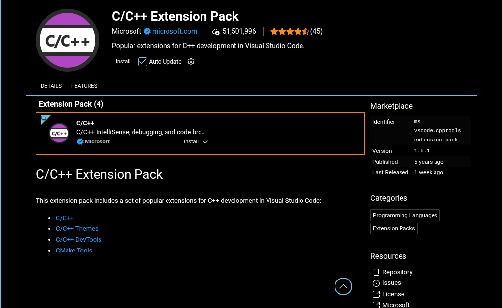
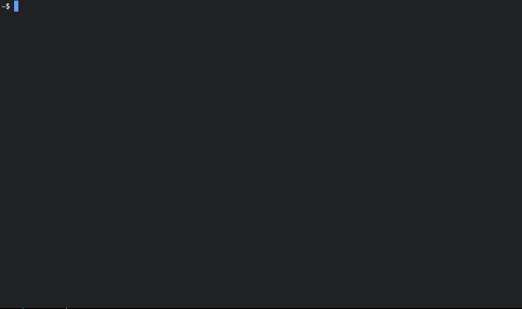
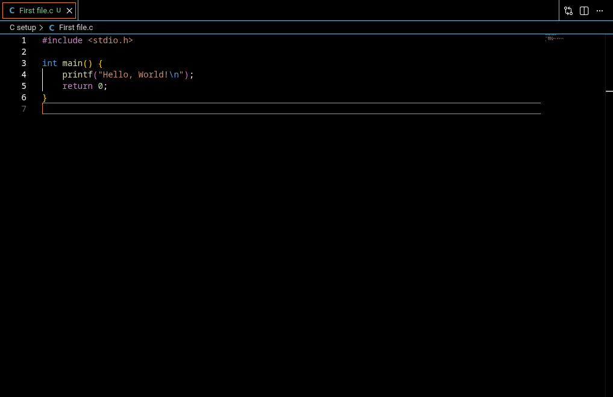

C-Language Development Setup
Required Editor
To work with C-Language professionally, you will use Visual Studio Code.
Download Visual Studio Code
Here is the installer matching your operating system.
-
Linux (.deb)
Download VS Code for Debian/Ubuntu -
Linux (.rpm)
Download VS Code for Fedora/RHEL
Here is how it should look after installation

Required Extension
There are no such required/necessary extension for VS Code to code in language C but to make it more relevent to code you can install some extensions such as the "C/C++ Extension Pack".

Final Step of installation
Here we will install required compiler for C-Language
Firstly let's open terminal

Now you need to type some commands in you Terminal
sudo apt update
Second command
sudo apt upgrade -y
Third and final command
sudo apt install build-essential -y
Now you can start coding in C-Language
Firstly Create a file in C-Language
just go ahead and start typing your first code.

Now Let's run the code
Firstly open the terminal in vs code by pressing ctrl + j
now enter first code as :
gcc {file name} -oa
./a
you have the output right away
All set to go
Now you are all set to start your coding journy in C-Language just go ahead and start typing your first code.